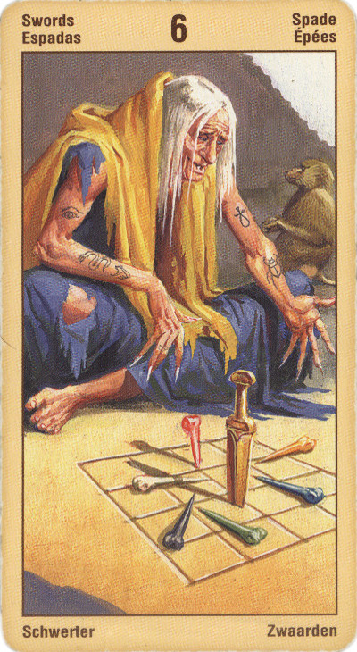

Шестёрка Мечей — Наука
Для человека смелого, привыкшего полагаться на свои силы, она в прямом виде означает шанс удачи. Переход сознания на новый уровень.
Для человека же робкого, нерешительного она неблагоприятна: риск и опасности слишком велики, поэтому его затея скорее всего обречена на неудачу.
Шестёрка Мечей указывает на перемены, благодаря которым мы можем достичь новых берегов. Что ждёт нас впереди, неизвестно. Поэтому она означает также ностальгия, горечь прощания, неуверенность, опасения и заботы, но также определённое любопытство и интерес к тому, что будет.
Шестерка Мечей - знак удачи и благополучного развития любой загаданной вами ситуации. За что бы вы сейчас ни взялись, без труда добьетесь желаемых результатов. Не менее гармонично будут складываться и отношения с людьми: карта предсказывает, что в скором времени в вашей жизни появятся новые друзья и увлечения. От вас требуется лишь проявить должную заинтересованность - и успех в любой сфере деятельности обеспечен!
Непонятные перемены в жизни. Переезд на новое место. Для тех, кто ожидает суда- отсрочка приговора или более мягкое наказание.
В перевернутом виде означает, что шанс удачи ничтожно мал и для смелого, и для робкого, так что за это дело браться не стоит.